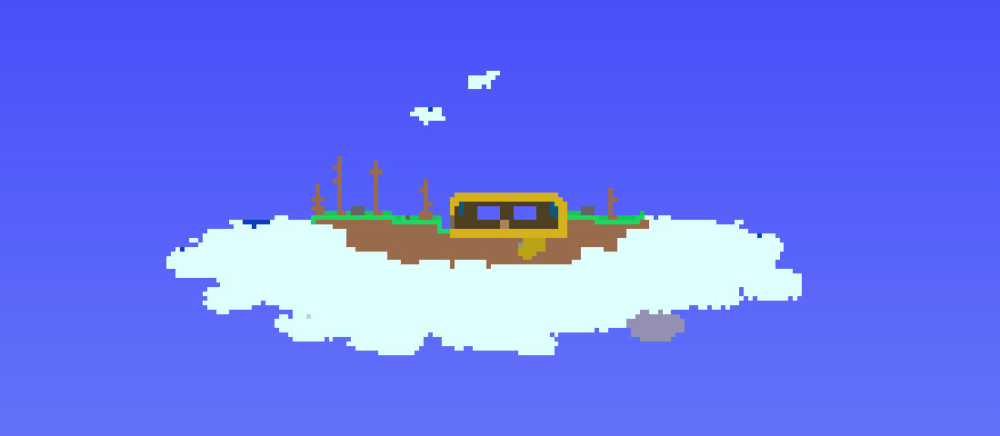
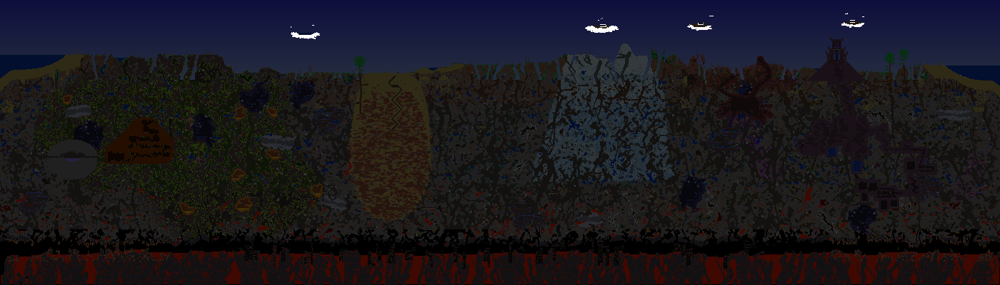

TerraMap
TerraMapHow to find Floating Islands in Terraria
Floating Islands drift high above the surface, each with a small house and a Skyware Chest holding some of the best early accessories. They're easy to miss from the ground, and TerraMap shows every one at once.

Where they are
- High in the sky, spread out across the width of the world.
- A few per world: the small worlds we checked had four, and a large world had six.
- Not all have houses. Some are Floating Lakes, a cloud island with a pond and no house.
What's in the Skyware Chest
Each island house has one Skyware Chest. It always has one of these:
- Lucky Horseshoe: no more fall damage.
- Shiny Red Balloon: jump much higher.
- Starfury: a sword that calls stars down from the sky.
- Celestial Magnet: pulls in mana stars from farther away.
Some also have a Sky Mill crafting station, plus potions, bars, coins and paintings.
Find them with TerraMap
- Open TerraMap and open your world with Open World File, or drag your
.wldfile onto the page. Not sure where it is? See where Terraria world files are saved. - Choose Sets → Floating Islands, then press H (Highlight All).
- Press Z (Zoom to Fit). Everything else dims, and the islands' clouds show as bright white shapes near the top of the map.
- Zoom in on one with the mouse wheel. Hover over the Skyware Chest in the house to preview what's inside, and click it to see its location in the Info pane (I).

Getting up there: TerraMap shows how high each island is in the same format as the in-game Depth Meter, so you know how far you have to climb or build. A tower of platforms or blocks gets you there early on, and a Gravitation Potion makes it easier.
Want to avoid spoilers? Open your Terraria folder with Folder and choose a character, and TerraMap only shows islands that character has seen.